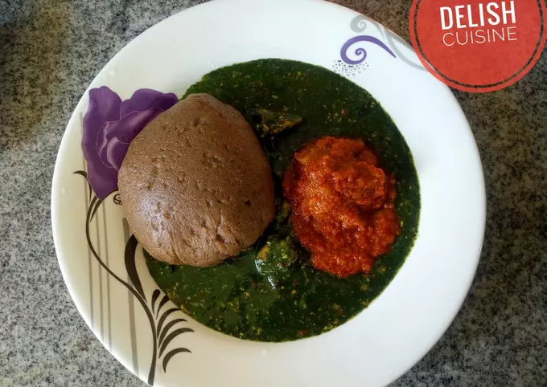

Amala
Recipe

Description
Amala is a local indigenous Yoruba food, native to the Yoruba ethnic group of Southwestern Nigeria. It is made out of yam flour
Amala can be consumed with ewedu(jute) and stew, or any other soup. Amala is a very good meal for diabetic patients, dietary fibre in amala reduces risk of having cancer, it builds immune system, and improves eye sight.
Ingredients
- 1 Bucnch of Ewedu (Jute) Leaves
- 2 cups of water
- 1 Tablespoon of Locust Beans (Iru)
- 1 tablespoon of crayfish
- 2 cube of maggi
- 1 Teaspoon of Salt
- Yam Flour
- Water
Steps in Preparation
- Pick your Ewedu leaves, make sure you don’t pick the stalk/stem along with it.
- Wash the leaves thoroughly to rid it of dirt. Pour the water into a medium size pan, place on a bob on medium heat, bring to a rolling boil.
- using a blender, take the Ewedu off the heat and leave to cool for a bit…don’t switch the heat off.
- Add the Ewedu into a blender along with the Iru, make sure you don’t add all the water, just 1/2 a cup should do. Too much water will affect the viscosity of your Ewedu.
- Using the pulse function, pulse a few times till you get a semi-purée consistency.
- Transfer the Ewedu back into the pan, add the ground crayfish, bouillon cube and salt to taste.
- Switch off the heat and let it simmer with the residual heat for 3 minutes….stir occasionally to prevent burning. Do not over cook or the Ewedu will go brown.
- Pour water in a pot and allow to get hot, add the yam flour into it and stir continuously using a wooden stick to avoid lumps.
- Add extra yam flour if watery or add some water if it’s too strong (just like the way your make your semovita).
- Turn the yam flour very well, then add a bit of water, cover and allow to cook for about 10mins, then Wrap it up in nylon.